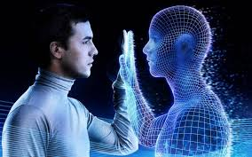

Los videos y la IA

La generación de video con inteligencia artificial es una tecnología que permite crear videos de forma automática utilizando algoritmos avanzados. Estos sistemas pueden generar escenas, animaciones o incluso personas hablando sin necesidad de grabación real. Se basan en técnicas como el aprendizaje profundo y redes neuronales.
¿Cómo funciona?
La IA analiza grandes cantidades de datos, como imágenes, videos y audio, para aprender patrones. Luego, puede generar contenido nuevo a partir de texto, imágenes o instrucciones. Por ejemplo, puedes escribir un guion y la IA lo convierte en un video completo.
Historia resumida
La generación de video con IA comenzó a desarrollarse con el avance del aprendizaje automático en los años 2000. Sin embargo, no fue hasta la década de 2010 cuando aparecieron tecnologías más avanzadas como las redes generativas adversarias (GANs), que permitieron crear imágenes y videos más realistas.
En los últimos años, el crecimiento del poder computacional y nuevas herramientas han permitido generar videos cada vez más realistas, incluyendo avatares digitales, animaciones automáticas y contenido generado a partir de texto.
Aplicaciones actuales
Hoy en día, esta tecnología se utiliza en áreas como el entretenimiento, la publicidad, la educación y las redes sociales. Permite crear contenido más rápido, reducir costos y facilitar la producción audiovisual sin necesidad de equipos profesionales.